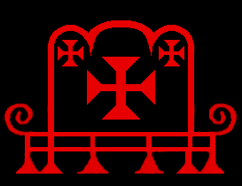
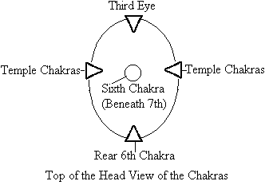
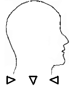
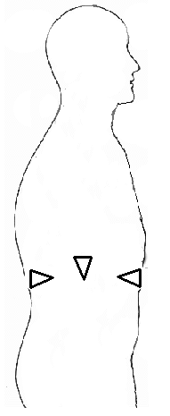
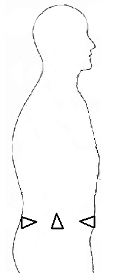

Opening the Watchtowers
*Please note:
In response to a number of people asking for this meditation from Satanic Power Meditation Vol. III [one of the two that were never posted on the JoS website because of a lack of time on my part], I have put this up, BUT, this is outdated in the way that Satan and Lilith have given me new knowledge, making the results of chakra meditations much more powerful. The vibrations given below are weaker versions, but are from the original meditation. If you desire extreme results, then use the vibrations for each of the chakras and their extensions given on this webpage
|  |
The three "knot" chakras referred to in Sanskrit are the base, the heart [the major knot chakra] and the sixth, behind the third eye - The heart with the side extensions in the shoulder chakras, the base with extensions in the hip chakras and the sixth with extensions in the temple chakras. These three differ from the others in that they are the granthis where the serpent can encounter a major obstacle, preventing it from ascending unless it is opened. The heart has the most powerful block of the three, which keeps the serpent in the lower chakras, preventing expanded consciousness and other psychic abilities. This can be seen blatantly in Barbatos' Sigil at left. |
This is also where the fictitious tale of the crucifixion of that foul nazarene was stolen from- this CONCEPT; the nazarene being in the middle of the two others who were supposedly crucified. The more we learn of the occult, it is beyond any doubt that Christianity is nothing more than a hoax and is completely false in every respect.
I have learned from Satan that the Enochian Watchtowers, the three knots and the esoteric teachings in the Necronomicon are all allegories. The enemy deludes humanity by leading us to believe that all of these are all material, such as characters and places, when in truth they are all spiritual concepts. The true spiritual path leads us to the godhead where we attain our goals, desires and become masters of our own destinies.
 |
Set's Sigil also depicts the three granthis. Note how the crosses flare out at the ends, depicting the chakras. To fully empower these three chakras one must vibrate all four of them plus the fifth in the middle, taking turns at each one and this is where the swastika came from originally, as the swastika is in the shape of spiritual energy. Once all three granthis are fully opened, one will reach a new spiritual level of knowledge and understanding. The Serpent of Satan is free to ascend.
|
Do your best to feel each of the vibrations in the chakra you are working on. Just focus intensely. This is difficult, but just do the best you can.
Each of these meditations is very powerful and only one chakra should be done at a time with a 48-hour waiting period before proceeding to the next. A sensation of pressure or aching indicates you were successful in opening these points, but experience reveals these can close and the exercises may have to be repeated until they are permanently open. However many times one must repeat these is individual.
Opening the Watchtowers of the Third Knot

The diagram above illustrates from a view looking down at upon the top of the head. Note the four quarters. Within these are the four watchtowers of the sixth chakra. The sixth chakra behind the third eye in the middle is the center.
1. Begin with the third eye in the front. Breathe in energy into your third eye until your lungs are comfortably full and on the exhale, vibrate "THOTH" "TH - TH - TH – TH - OH - OH - OH - OH - TH - TH - TH - TH -TH This is done by vibrating the TH and OH at the same time as when you first opened your third eye. When you breathe in energy, visualize each chakra the correct way it should be aligned [the four points facing inwards, and with the sixth chakra point facing down] and light it up with the energy.
2. Repeat the steps given in number 1 now with your left temple chakra
3. Repeat the steps given in number one with your rear chakra at the back of your head, directly behind the sixth chakra
4. Do the same with your right temple chakra
5. Now do the same with your sixth chakra in the center of your head directly behind the third eye.
6. Repeat steps 1 – 6, seven times.
Opening the Watchtowers of the Second Knot
 | 1. Begin with the heart chakra extension in the front of your chest. Breathe in energy into this chakra until your lungs are comfortably full and on the exhale, vibrate "AMON" "AH - AH - AH – AH - M - M - M - M - UH - UH - N - N -N – N" When you breathe in energy, visualize each chakra the correct way it should be aligned [points facing inwards] and light it up with the energy. The center heart chakra has points facing both upwards and downwards in the shape of a yoni [which is a vagina] illustrated by the Tarot Card at left.
2. Repeat the steps given in number 1 now with your left shoulder chakra
|
3. Repeat the steps given in number one with your rear heart chakra at the back on your spine, directly behind your main heart chakra
4. Do the same with your right shoulder chakra
5. Now do the same with your heart chakra in the center of your chest.
Repeat steps 1 – 5, seven times.
Opening the Watchtowers of the First Knot
1. Begin with the base chakra extension in the front. This is the right at the root of the clitoris for women and the penis for men. Breathe in energy into this chakra until your lungs are comfortably full and on the exhale, drop your chin to your chest and vibrate "REIð" AS IN THE Reið Rune. "RRR-AY-AY-AY-EEE-TH-TH-TH"
The letter ð is vibrated as a heavy TH, but the tongue is a bit further upwards where your two teeth meet with your gums. This completes a powerful circuit of energy. The R's are always rolled.
2. When you breathe in energy, visualize each chakra the correct way it should be aligned [points facing inwards], and light it up with the energy. The center base chakra faces point upwards.
3. Repeat the steps given in number 1 now with your left hip chakra
4. Repeat the steps given in number 1 with your rear base chakra at the back on your spine, directly at your tailbone.
5. Do the same with your right hip chakra
6. Now do the same with your center base chakra this is located at your perineum. [The perineum is half-way between your anus and your genitals].
Repeat steps 1 – 5, seven times.
Opening the Remaining Chakras
|  | The Throat Chakra
1. Begin with your throat chakra. Breathe in energy into your front throat chakra extension and vibrate "NINNGHIZHIDDA." N-N-N-N-N-E-E-E-E-N-N-N-N-N-GH-GH-GH-GH-E-E-E-E-ZH-ZH-ZH-ZH-E-E-E-TH-TH-TH-THE-THE-AH-AH-AH. Remember Kabalistic "speech" is different from our everyday words. |
The I's are pronounced as EE, as in the word "see." The "GH" is guttural and made in the back of the throat, not as a hard guttural K, but as a smooth sound. "ZH" is pronounced as the French "J" as in "Jacques." Again, D is pronounced as "THE" as given above. Align your chakra as shown in the illustration below.
2. Now, focus on your middle throat chakra and do the same as in step one.
3. Then, do the same with the rear extension on your spine at the back of your neck.
4. Repeat steps 1 – 3 seven times.
The Solar Plexus [666] Chakra
1. Breathe in energy into the front solar plexus chakra and on the exhale drop your chin to your chest and vibrate: RA
R-R-R-AH-AH-AH-AH-AH-AH
Be sure to roll your R's. Align your chakra as shown in the illustration to the right.
2. Repeat step 1 with your middle chakra and then your rear chakra
3. Do the above seven times.
| 
|
The Sacral Chakra
| 
| 1. Breathe in energy into the front solar plexus chakra and on the exhale drop your chin to your chest and vibrate: "NERGAL" N-N-N-AY-AY-R-R-R-G-G-G-AY-AY-L-L-L Be sure to roll your R's and align your chakra as shown in the illustration to the left.
2. Repeat step 1 with your middle chakra and then your rear chakra
3. Do the above seven times.
|
© Copyright 2010, 2012, 2016, Joy of Satan Ministries;
Library of Congress Number: 12-16457
BACK TO MAIN POWER MEDITATION PAGE